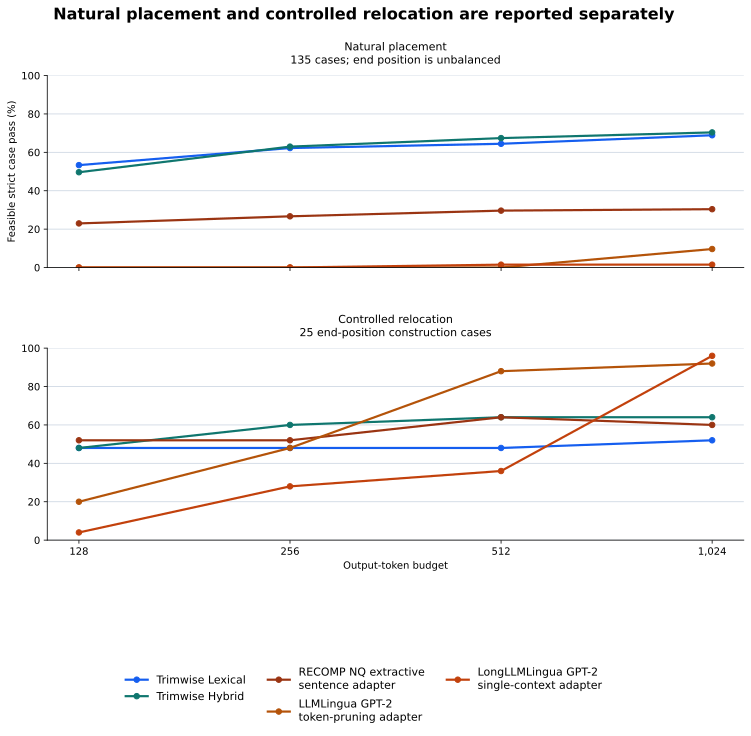

POSITION-CONTROLLED EVALUATION SUITE
Normalized contiguous required-span containment is the post-hoc primary metric over frozen outputs. Every annotated source span must survive as one contiguous normalized passage; prohibited content and budget violations still fail the case. No compressor or QA calls were rerun.

| Evaluated method or adapter | 128 | 256 | 512 | 1024 |
|---|---|---|---|---|
| Trimwise Lexical | 52.5% | 60.0% | 61.9% | 66.2% |
| Trimwise Hybrid | 49.4% | 62.5% | 66.9% | 69.4% |
| RECOMP NQ extractive sentence adapter | 27.5% | 30.6% | 35.0% | 35.0% |
| LLMLingua GPT-2 token-pruning adapter | 3.1% | 7.5% | 13.8% | 22.5% |
| LongLLMLingua GPT-2 single-context adapter | 0.6% | 4.4% | 6.9% | 16.2% |
At 256 tokens, span survival ignores prohibited text and budget compliance; feasible case pass requires all three. This separates retrieval failure from an output that violates the shared evaluator budget.
| Evaluated method or adapter | Span survival | Feasible case pass | Budget violation |
|---|---|---|---|
| Trimwise Lexical | 71.9% | 60.0% | 0.0% |
| Trimwise Hybrid | 74.4% | 62.5% | 0.0% |
| RECOMP NQ extractive sentence adapter | 30.6% | 30.6% | 0.0% |
| LLMLingua GPT-2 token-pruning adapter | 15.0% | 7.5% | 43.8% |
| LongLLMLingua GPT-2 single-context adapter | 15.6% | 4.4% | 69.4% |
These 256-token values are feasible case pass under the predeclared post-hoc metrics. The 80% and 90% tests require ordered matching within one reference-length output window; complete contiguous containment remains primary.
| Evaluated method or adapter | Contiguous | Local ordered 80% | Local ordered 90% |
|---|---|---|---|
| Trimwise Lexical | 60.0% | 61.3% | 61.3% |
| Trimwise Hybrid | 62.5% | 63.7% | 63.7% |
| RECOMP NQ extractive sentence adapter | 30.6% | 32.5% | 31.9% |
| LLMLingua GPT-2 token-pruning adapter | 7.5% | 8.1% | 8.1% |
| LongLLMLingua GPT-2 single-context adapter | 4.4% | 5.0% | 5.0% |
The natural-only subset is unbalanced because it contains 15 natural end cases. The 25 relocated
rows are a construction diagnostic, not a causal substitute for natural placement. The self-source
check removes every real-trimwise-* case.

| Evaluated method or adapter | Natural n=135 | Relocated n=25 | Without self-source n=150 |
|---|---|---|---|
| Trimwise Lexical | 62.2% | 48.0% | 60.0% |
| Trimwise Hybrid | 63.0% | 60.0% | 63.3% |
| RECOMP NQ extractive sentence adapter | 26.7% | 52.0% | 32.0% |
| LLMLingua GPT-2 token-pruning adapter | 0.0% | 48.0% | 8.0% |
| LongLLMLingua GPT-2 single-context adapter | 0.0% | 28.0% | 4.7% |
All values below are 256-token feasible strict case pass. Evidence positions are balanced in the 160-case primary suite; task counts are not equal.
| Evaluated method or adapter | Beginning | Middle | End | Multiple |
|---|---|---|---|---|
| Trimwise Lexical | 72.5% | 65.0% | 57.5% | 45.0% |
| Trimwise Hybrid | 77.5% | 65.0% | 62.5% | 45.0% |
| RECOMP NQ extractive sentence adapter | 35.0% | 40.0% | 32.5% | 15.0% |
| LLMLingua GPT-2 token-pruning adapter | 0.0% | 0.0% | 30.0% | 0.0% |
| LongLLMLingua GPT-2 single-context adapter | 0.0% | 0.0% | 17.5% | 0.0% |
| Evaluated method or adapter | Adversarial | Evidence QA | Instruction | Procedure | Real source | Structured |
|---|---|---|---|---|---|---|
| Trimwise Lexical | 35.3% | 82.6% | 0.0% | 70.0% | 63.3% | 90.5% |
| Trimwise Hybrid | 35.3% | 80.4% | 0.0% | 70.0% | 73.3% | 100.0% |
| RECOMP NQ extractive sentence adapter | 35.3% | 4.3% | 11.5% | 70.0% | 36.7% | 61.9% |
| LLMLingua GPT-2 token-pruning adapter | 11.8% | 0.0% | 7.7% | 10.0% | 20.0% | 0.0% |
| LongLLMLingua GPT-2 single-context adapter | 0.0% | 0.0% | 3.8% | 5.0% | 16.7% | 0.0% |
Fixed-seed percentile bootstrap intervals over paired case-level differences in the 160-case frozen suite. They are descriptive uncertainty intervals for the post-hoc v1.2 analysis, not preregistered hypothesis tests.
| Budget | Hybrid - RECOMP | Fixed-seed 95% paired bootstrap interval |
|---|---|---|
| 128 | +21.9 pp | [+13.1, +31.2] pp |
| 256 | +31.9 pp | [+22.5, +41.2] pp |
| 512 | +31.9 pp | [+21.9, +41.9] pp |
| 1,024 | +34.4 pp | [+25.0, +43.8] pp |
The complete local-80%, local-90%, and both Trimwise configuration intervals are in the paired- bootstrap CSV. See the protocol, frozen manifest, and the all-case summary. The natural-only, relocated-only, self-source exclusion, and paired bootstrap CSVs are released beside it. The exploratory component study is reported separately.